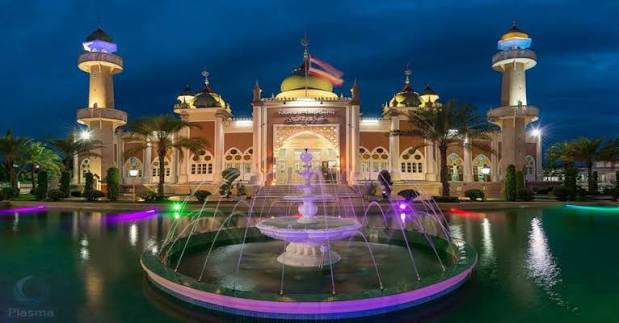
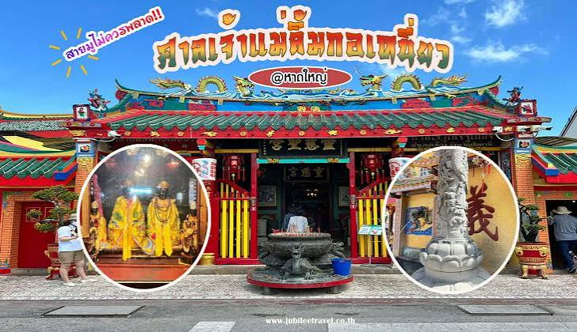
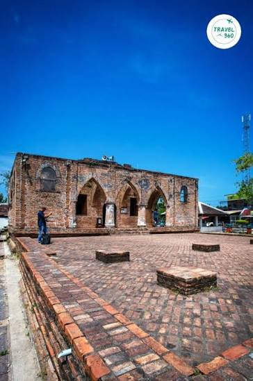
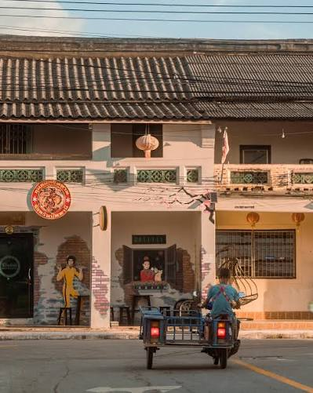
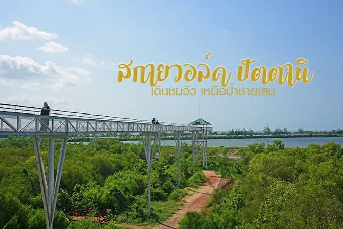
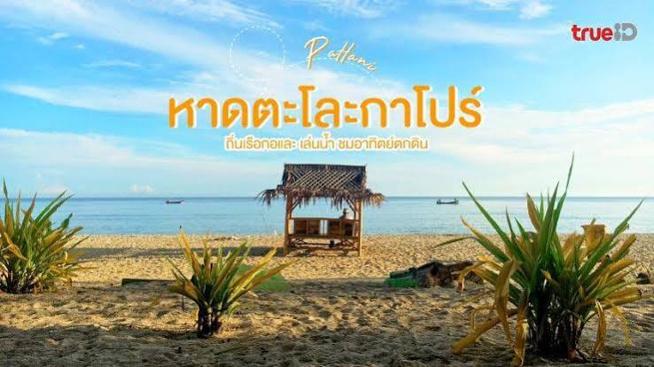

แหล่งท่องเที่ยวที่น่าชม

ศาลเจ้าแม่ลิ้มกอเหนี่ยว
สถานที่สำคัญทางวัฒนธรรมที่สะท้อนความเชื่อและประวัติศาสตร์ของชาวปัตตานี
ดูรายละเอียด
มัสยิดกรือเซะ
เป็นจุดหมายปลายทางที่น่าสนใจสำหรับคนที่อยากเห็นความสำคัญของศาสนาและสถาปัตยกรรมท้องถิ่น
ดูรายละเอียด
ย่านเมืองเก่าปัตตานี
เดินสำรวจบ้านเรือนและเส้นทางเก่าๆ ที่ยังคงบอกเล่าเรื่องราวของเมืองในอดีต
ดูรายละเอียด
